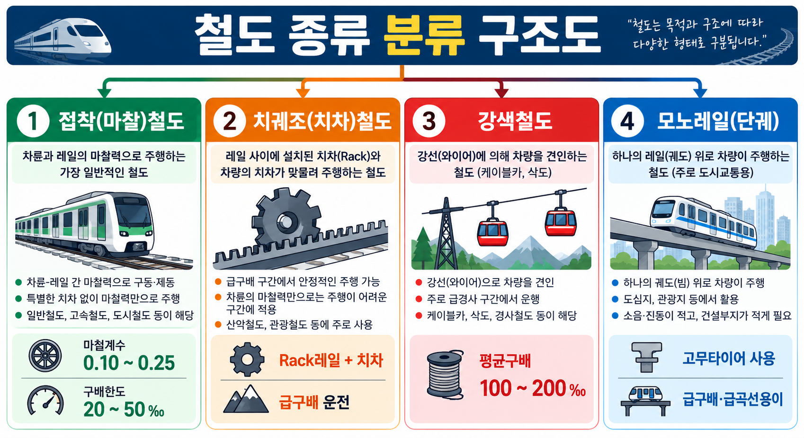

§1. 법제상 분류
법제상 분류는 다음 4종이다.
공영철도는 이 분류에 포함되지 않는다는 것이 핵심 함정이다.
❌ 대표 함정
✕공영철도 → 법제상 분류에 없음. 오답 선지.
§2. 철도 종류 분류

[VIS-027 철도종류분류 이미지 — 경로 확인 필요]
VIS-027_철도종류분류.png
| 종류 |
구동방식 |
특징 |
| 점착(마찰)철도 |
차륜-레일 마찰력 |
일반 철도의 기본 방식 |
| 치궤조(치차)철도 |
Rack 레일 + 치차 |
급구배 운전 가능 |
| 강색철도 |
강선(와이어) 견인 |
급경사 구간에 사용 |
| 모노레일 |
고무타이어 |
급구배·급곡선 용이 |
§3. 모노레일 특징
장점
- 소음·진동·대기오염이 거의 없음
- 고무타이어 방식 → 급구배·급곡선에 유리
- 지하철 대비 건설비 저렴·공기 단축
단점
- 분기장치가 복잡
- 분기 작동시간이 김
- 타 교통기관과 승환이 어려움
- 차량 고장 시 피난 시간이 오래 걸림
❌ 모노레일 대표 함정
✕"모노레일은 소음·진동·대기오염이 많다" → 오답 (장점이 소음 없음)
✕"모노레일은 급곡선 통과가 어렵다" → 오답 (급곡선 용이가 장점)
§4. 핵심암기
📌 암기 공식
법제 분류 = 국·지·경·전 / 공영 제외
치궤조 = Rack+치차 / 강색 = 와이어 / 모노레일 = 고무타이어
모노레일 장점 = 급구배·급곡선·소음없음 / 단점 = 분기복잡·승환어려움
§5. 시험포인트
함정 ①공영철도 → 법제 분류 아님 → 오답 선지
핵심 ①급구배 구간 운전에 사용하는 방식 → 치궤조(치차)철도 (Rack 레일)
핵심 ②모노레일 장점: 소음·진동 거의 없음, 급구배·급곡선 유리
함정 ②"모노레일 급곡선 통과 어렵다" → 오답 (급곡선이 장점)
§6. 문제 연결
4지선다형
Q1.
철도 법제상 분류에 해당하지 않는 것은?
- ① 국유철도
- ② 공영철도
- ③ 경편철도
- ④ 전용철도
4지선다형
Q2.
급구배 구간 운전에 사용하는 구동방식으로 옳은 것은?
- ① 점착철도
- ② 강색철도
- ③ 치궤조철도
- ④ 모노레일
4지선다형
Q3.
모노레일의 특징으로 옳지 않은 것은?
- ① 소음·진동이 거의 없다.
- ② 급구배·급곡선 통과에 유리하다.
- ③ 분기장치가 간단하다.
- ④ 지하철보다 건설비가 저렴하다.
정답 및 해설
Q1 정답 ②
- 법제상 분류: 국유·지방·경편·전용
- ② 공영철도는 이 분류에 포함되지 않음.
⚠ TRAP: 공영철도는 실제 존재하지만 법제상 4종 분류(국유·지방·경편·전용)에는 해당하지 않는다.
Q2 정답 ③
- ③ 치궤조철도: Rack 레일 + 치차(齒車) 방식 → 급구배 운전 가능.
- 강색철도도 급경사에 사용하지만, "급구배"의 대표 답은 치궤조.
- 점착철도는 일반 평탄선 기본 방식.
Q3 정답 ③
- ③ 분기장치가 간단하다 → 오답. 모노레일은 분기장치가 복잡하고 분기 작동시간이 긴 것이 단점.
- ①②④는 모두 모노레일의 장점.
⚠ TRAP: "분기장치가 간단하다"는 모노레일의 특징이 아니라 단점의 반대 표현이다. 모노레일 단점 = 분기 복잡, 분기 작동시간 김.